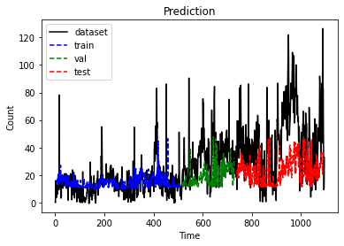
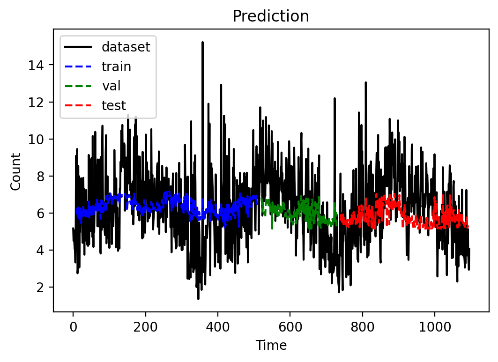

#Import stuffs
!pip install pytorch-lightning
!pip install einops
!pip install pykeops
!pip install opt-einsum
Looking in indexes: https://pypi.org/simple, https://us-python.pkg.dev/colab-wheels/public/simple/
Collecting pytorch-lightning
Downloading pytorch_lightning-2.0.0-py3-none-any.whl (715 kB)
━━━━━━━━━━━━━━━━━━━━━━━━━━━━━━━━━━━━━━━ 715.6/715.6 KB 7.8 MB/s eta 0:00:00
?25hRequirement already satisfied: PyYAML>=5.4 in /usr/local/lib/python3.9/dist-packages (from pytorch-lightning) (6.0)
Requirement already satisfied: numpy>=1.17.2 in /usr/local/lib/python3.9/dist-packages (from pytorch-lightning) (1.22.4)
Requirement already satisfied: fsspec[http]>2021.06.0 in /usr/local/lib/python3.9/dist-packages (from pytorch-lightning) (2023.3.0)
Requirement already satisfied: typing-extensions>=4.0.0 in /usr/local/lib/python3.9/dist-packages (from pytorch-lightning) (4.5.0)
Collecting lightning-utilities>=0.7.0
Downloading lightning_utilities-0.8.0-py3-none-any.whl (20 kB)
Requirement already satisfied: tqdm>=4.57.0 in /usr/local/lib/python3.9/dist-packages (from pytorch-lightning) (4.65.0)
Requirement already satisfied: torch>=1.11.0 in /usr/local/lib/python3.9/dist-packages (from pytorch-lightning) (1.13.1+cu116)
Requirement already satisfied: packaging>=17.1 in /usr/local/lib/python3.9/dist-packages (from pytorch-lightning) (23.0)
Collecting torchmetrics>=0.7.0
Downloading torchmetrics-0.11.4-py3-none-any.whl (519 kB)
━━━━━━━━━━━━━━━━━━━━━━━━━━━━━━━━━━━━━━ 519.2/519.2 KB 19.0 MB/s eta 0:00:00
?25hRequirement already satisfied: requests in /usr/local/lib/python3.9/dist-packages (from fsspec[http]>2021.06.0->pytorch-lightning) (2.27.1)
Collecting aiohttp!=4.0.0a0,!=4.0.0a1
Downloading aiohttp-3.8.4-cp39-cp39-manylinux_2_17_x86_64.manylinux2014_x86_64.whl (1.0 MB)
━━━━━━━━━━━━━━━━━━━━━━━━━━━━━━━━━━━━━━━━ 1.0/1.0 MB 16.8 MB/s eta 0:00:00
?25hCollecting aiosignal>=1.1.2
Downloading aiosignal-1.3.1-py3-none-any.whl (7.6 kB)
Collecting async-timeout<5.0,>=4.0.0a3
Downloading async_timeout-4.0.2-py3-none-any.whl (5.8 kB)
Collecting multidict<7.0,>=4.5
Downloading multidict-6.0.4-cp39-cp39-manylinux_2_17_x86_64.manylinux2014_x86_64.whl (114 kB)
━━━━━━━━━━━━━━━━━━━━━━━━━━━━━━━━━━━━━━ 114.2/114.2 KB 10.0 MB/s eta 0:00:00
?25hRequirement already satisfied: charset-normalizer<4.0,>=2.0 in /usr/local/lib/python3.9/dist-packages (from aiohttp!=4.0.0a0,!=4.0.0a1->fsspec[http]>2021.06.0->pytorch-lightning) (2.0.12)
Requirement already satisfied: attrs>=17.3.0 in /usr/local/lib/python3.9/dist-packages (from aiohttp!=4.0.0a0,!=4.0.0a1->fsspec[http]>2021.06.0->pytorch-lightning) (22.2.0)
Collecting yarl<2.0,>=1.0
Downloading yarl-1.8.2-cp39-cp39-manylinux_2_17_x86_64.manylinux2014_x86_64.whl (264 kB)
━━━━━━━━━━━━━━━━━━━━━━━━━━━━━━━━━━━━━━ 264.6/264.6 KB 22.7 MB/s eta 0:00:00
?25hCollecting frozenlist>=1.1.1
Downloading frozenlist-1.3.3-cp39-cp39-manylinux_2_5_x86_64.manylinux1_x86_64.manylinux_2_17_x86_64.manylinux2014_x86_64.whl (158 kB)
━━━━━━━━━━━━━━━━━━━━━━━━━━━━━━━━━━━━━━ 158.8/158.8 KB 14.5 MB/s eta 0:00:00
?25hRequirement already satisfied: idna<4,>=2.5 in /usr/local/lib/python3.9/dist-packages (from requests->fsspec[http]>2021.06.0->pytorch-lightning) (3.4)
Requirement already satisfied: certifi>=2017.4.17 in /usr/local/lib/python3.9/dist-packages (from requests->fsspec[http]>2021.06.0->pytorch-lightning) (2022.12.7)
Requirement already satisfied: urllib3<1.27,>=1.21.1 in /usr/local/lib/python3.9/dist-packages (from requests->fsspec[http]>2021.06.0->pytorch-lightning) (1.26.15)
Installing collected packages: multidict, lightning-utilities, frozenlist, async-timeout, yarl, torchmetrics, aiosignal, aiohttp, pytorch-lightning
Successfully installed aiohttp-3.8.4 aiosignal-1.3.1 async-timeout-4.0.2 frozenlist-1.3.3 lightning-utilities-0.8.0 multidict-6.0.4 pytorch-lightning-2.0.0 torchmetrics-0.11.4 yarl-1.8.2
Looking in indexes: https://pypi.org/simple, https://us-python.pkg.dev/colab-wheels/public/simple/
Collecting einops
Downloading einops-0.6.0-py3-none-any.whl (41 kB)
━━━━━━━━━━━━━━━━━━━━━━━━━━━━━━━━━━━━━━━━ 41.6/41.6 KB 2.3 MB/s eta 0:00:00
?25hInstalling collected packages: einops
Successfully installed einops-0.6.0
Looking in indexes: https://pypi.org/simple, https://us-python.pkg.dev/colab-wheels/public/simple/
Collecting pykeops
Downloading pykeops-2.1.1.tar.gz (87 kB)
━━━━━━━━━━━━━━━━━━━━━━━━━━━━━━━━━━━━━━━━ 87.4/87.4 KB 3.1 MB/s eta 0:00:00
?25h Preparing metadata (setup.py) ... ?25l?25hdone
Requirement already satisfied: numpy in /usr/local/lib/python3.9/dist-packages (from pykeops) (1.22.4)
Collecting pybind11
Downloading pybind11-2.10.4-py3-none-any.whl (222 kB)
━━━━━━━━━━━━━━━━━━━━━━━━━━━━━━━━━━━━━━━ 222.3/222.3 KB 9.6 MB/s eta 0:00:00
?25hCollecting keopscore==2.1.1
Downloading keopscore-2.1.1.tar.gz (84 kB)
━━━━━━━━━━━━━━━━━━━━━━━━━━━━━━━━━━━━━━━━ 84.6/84.6 KB 8.1 MB/s eta 0:00:00
?25h Preparing metadata (setup.py) ... ?25l?25hdone
Building wheels for collected packages: pykeops, keopscore
Building wheel for pykeops (setup.py) ... ?25l?25hdone
Created wheel for pykeops: filename=pykeops-2.1.1-py3-none-any.whl size=112293 sha256=11233af18cd5f1d13af1d2fc6cef627bc38b688f8f2aa0188d87f808e91b8ae8
Stored in directory: /root/.cache/pip/wheels/22/ac/b4/3ced6d88473155a4fc54174add9c4438f2d412864b5a5b6664
Building wheel for keopscore (setup.py) ... ?25l?25hdone
Created wheel for keopscore: filename=keopscore-2.1.1-py3-none-any.whl size=148011 sha256=5dc65988d067d3e3f000e47a3f73e5a8d6ee7c47649e8af04fcb023641bdc78c
Stored in directory: /root/.cache/pip/wheels/90/73/4e/4b76402bc0c6343c69d0a35539d3c551f65fcd82eec5aad8b6
Successfully built pykeops keopscore
Installing collected packages: pybind11, keopscore, pykeops
Successfully installed keopscore-2.1.1 pybind11-2.10.4 pykeops-2.1.1
Looking in indexes: https://pypi.org/simple, https://us-python.pkg.dev/colab-wheels/public/simple/
Requirement already satisfied: opt-einsum in /usr/local/lib/python3.9/dist-packages (3.3.0)
Requirement already satisfied: numpy>=1.7 in /usr/local/lib/python3.9/dist-packages (from opt-einsum) (1.22.4)
#import required libraries
import numpy as np
import pandas as pd
import matplotlib as mpl
import matplotlib.pyplot as plt
import math
import random
from datetime import datetime as dt
from sklearn.base import BaseEstimator
from sklearn.base import TransformerMixin
from sklearn.metrics import mean_squared_error
from sklearn.preprocessing import MinMaxScaler
import torch
import torch.nn as nn
from torch.utils.data import TensorDataset, DataLoader
from torch.utils.data import Dataset
import torch.optim as optim
import torch.nn.functional as F
from torch.nn import Module, Parameter
from functools import partial
from scipy import special as ss
from pytorch_lightning.utilities import rank_zero_only
from einops import rearrange, repeat
import opt_einsum as oe
import datetime
device = "cuda" if torch.cuda.is_available() else "cpu"
random.seed(67686970)
torch.manual_seed(67686970)
contract = oe.contract
contract_expression = oe.contract_expression
import warnings
warnings.filterwarnings("ignore")
def read_data():
# Load CSV into dataframe and format
df = pd.read_csv('final_daily.csv')
df['date']=pd.to_datetime(df['date'])
df=df[df['date']<datetime.datetime(2023,1,1)]
variable = ['price', 'demand', 'avg_temp']
scaler = MinMaxScaler()
df[variable] = scaler.fit_transform(df[variable].values.reshape(-1, len(variable)))
VAL_PERC = 0.30
n_train = int(len(df[:-365]) * (1 - VAL_PERC))
dataframe_train = df[variable][0:n_train]
train_df = dataframe_train.values.reshape(-1, len(variable))
dataframe_val = df[variable][n_train:-365]
val_df = dataframe_val.values.reshape(-1, len(variable))
dataframe_test = df[variable][-365:]
test_df = dataframe_test.values.reshape(-1, len(variable))
dataframe_dataset = df[variable][0:df.shape[0]]
dataset= dataframe_dataset.values.reshape(-1, len(variable))
return df, train_df, val_df, test_df, dataset, scaler
def to_sequences(dataset, seq_size): # seq_size is Number of time steps to look back
#Larger sequences (look further back) may improve forecasting.
x = []
y = []
for i in range(len(dataset)-seq_size-1):
window = dataset[i:(i+seq_size), :]
x.append(window)
y.append(dataset[i+seq_size, :])
print(np.array(x).shape)
return np.array(x),np.array(y)
class EarlyStopping:
"""Early stops the training if validation loss doesn't improve after a given patience."""
def __init__(self, patience=7, verbose=False, delta=0):
"""
Args:
patience (int): How long to wait after last time validation loss improved.
Default: 7
verbose (bool): If True, prints a message for each validation loss improvement.
Default: False
delta (float): Minimum change in the monitored quantity to qualify as an improvement.
Default: 0
"""
self.patience = patience
self.verbose = verbose
self.counter = 0
self.best_score = None
self.early_stop = False
self.val_loss_min = np.Inf
self.delta = delta
def __call__(self, val_loss):
score = -val_loss
if self.best_score is None:
self.best_score = score
elif score < self.best_score + self.delta:
self.counter += 1
print(f'EarlyStopping counter: {self.counter} out of {self.patience}')
if self.counter >= self.patience:
self.early_stop = True
else:
self.best_score = score
self.counter = 0
#S4 setups
import pykeops
from pykeops.torch import Genred
has_pykeops = True
def cauchy_conj(v, z, w):
""" Pykeops version """
expr_num = 'z * ComplexReal(v) - Real2Complex(Sum(v * w))'
expr_denom = 'ComplexMult(z-w, z-Conj(w))'
cauchy_mult = Genred(
f'ComplexDivide({expr_num}, {expr_denom})',
# expr_num,
# expr_denom,
[
'v = Vj(2)',
'z = Vi(2)',
'w = Vj(2)',
],
reduction_op='Sum',
axis=1,
)
v, z, w = _broadcast_dims(v, z, w)
v = _c2r(v)
z = _c2r(z)
w = _c2r(w)
r = 2*cauchy_mult(v, z, w)
return _r2c(r)
def _broadcast_dims(*tensors):
max_dim = max([len(tensor.shape) for tensor in tensors])
tensors = [tensor.view((1,)*(max_dim-len(tensor.shape))+tensor.shape) for tensor in tensors]
return tensors
_c2r = torch.view_as_real
_r2c = torch.view_as_complex
_conj = lambda x: torch.cat([x, x.conj()], dim=-1)
if tuple(map(int, torch.__version__.split('.')[:2])) >= (1, 10):
_resolve_conj = lambda x: x.conj().resolve_conj()
else:
_resolve_conj = lambda x: x.conj()
[KeOps] Warning : cuda was detected, but driver API could not be initialized. Switching to cpu only.
class TransposedLinear(nn.Module):
""" Linear module on the second-to-last dimension """
def __init__(self, d_input, d_output, bias=True):
super().__init__()
self.weight = nn.Parameter(torch.empty(d_output, d_input))
nn.init.kaiming_uniform_(self.weight, a=math.sqrt(5)) # nn.Linear default init
# nn.init.kaiming_uniform_(self.weight, nonlinearity='linear') # should be equivalent
if bias:
self.bias = nn.Parameter(torch.empty(d_output, 1))
bound = 1 / math.sqrt(d_input)
nn.init.uniform_(self.bias, -bound, bound)
else:
self.bias = 0.0
def forward(self, x):
return contract('... u l, v u -> ... v l', x, self.weight) + self.bias
def LinearActivation(
d_input, d_output, bias=True,
zero_bias_init=False,
transposed=False,
weight_norm=False,
**kwargs,
):
""" Returns a linear nn.Module with control over axes order, initialization, and activation """
# Construct core module
linear_cls = TransposedLinear if transposed else nn.Linear
#if activation == 'glu': d_output *= 2
linear = linear_cls(d_input, d_output, bias=bias)
# Initialize weight
nn.init.kaiming_uniform_(linear.weight)
# Initialize bias
if bias and zero_bias_init:
nn.init.zeros_(linear.bias)
# Weight norm
if weight_norm:
linear = nn.utils.weight_norm(linear)
activation = nn.ReLU()
linear = nn.Sequential(linear, activation)
return linear
""" Misc functional utilities """
def krylov(L, A, b, c=None, return_power=False):
"""
Compute the Krylov matrix (b, Ab, A^2b, ...) using the squaring trick.
If return_power=True, return A^{L-1} as well
"""
# TODO There is an edge case if L=1 where output doesn't get broadcasted, which might be an issue if caller is expecting broadcasting semantics... can deal with it if it arises
x = b.unsqueeze(-1) # (..., N, 1)
A_ = A
AL = None
if return_power:
AL = torch.eye(A.shape[-1], dtype=A.dtype, device=A.device)
_L = L-1
done = L == 1
# loop invariant: _L represents how many indices left to compute
while not done:
if return_power:
if _L % 2 == 1: AL = A_ @ AL
_L //= 2
# Save memory on last iteration
l = x.shape[-1]
if L - l <= l:
done = True
_x = x[..., :L-l]
else: _x = x
_x = A_ @ _x
x = torch.cat([x, _x], dim=-1) # there might be a more efficient way of ordering axes
if not done: A_ = A_ @ A_
assert x.shape[-1] == L
if c is not None:
x = torch.einsum('...nl, ...n -> ...l', x, c)
x = x.contiguous() # WOW!!
if return_power:
return x, AL
else:
return x
def power(L, A, v=None):
""" Compute A^L and the scan sum_i A^i v_i
A: (..., N, N)
v: (..., N, L)
"""
I = torch.eye(A.shape[-1]).to(A) # , dtype=A.dtype, device=A.device)
powers = [A]
l = 1
while True:
if L % 2 == 1: I = powers[-1] @ I
L //= 2
if L == 0: break
l *= 2
powers.append(powers[-1] @ powers[-1])
if v is None: return I
# Invariants:
# powers[-1] := A^l
# l := largest po2 at most L
# Note that an alternative divide and conquer to compute the reduction is possible and can be embedded into the above loop without caching intermediate powers of A
# We do this reverse divide-and-conquer for efficiency reasons:
# 1) it involves fewer padding steps for non-po2 L
# 2) it involves more contiguous arrays
# Take care of edge case for non-po2 arrays
# Note that this initial step is a no-op for the case of power of 2 (l == L)
k = v.size(-1) - l
v_ = powers.pop() @ v[..., l:]
v = v[..., :l]
v[..., :k] = v[..., :k] + v_
# Handle reduction for power of 2
while v.size(-1) > 1:
v = rearrange(v, '... (z l) -> ... z l', z=2)
v = v[..., 0, :] + powers.pop() @ v[..., 1, :]
return I, v.squeeze(-1)
""" HiPPO utilities """
def embed_c2r(A):
A = rearrange(A, '... m n -> ... m () n ()')
A = np.pad(A, ((0, 0), (0, 1), (0, 0), (0, 1))) + \
np.pad(A, ((0, 0), (1, 0), (0, 0), (1,0)))
return rearrange(A, 'm x n y -> (m x) (n y)')
def transition(measure, N, **measure_args):
""" A, B transition matrices for different measures
measure: the type of measure
legt - Legendre (translated)
legs - Legendre (scaled)
glagt - generalized Laguerre (translated)
lagt, tlagt - previous versions of (tilted) Laguerre with slightly different normalization
"""
# Laguerre (translated)
if measure == 'lagt':
b = measure_args.get('beta', 1.0)
A = np.eye(N) / 2 - np.tril(np.ones((N, N)))
B = b * np.ones((N, 1))
# Generalized Laguerre
# alpha 0, beta small is most stable (limits to the 'lagt' measure)
# alpha 0, beta 1 has transition matrix A = [lower triangular 1]
elif measure == 'glagt':
alpha = measure_args.get('alpha', 0.0)
beta = measure_args.get('beta', 0.01)
A = -np.eye(N) * (1 + beta) / 2 - np.tril(np.ones((N, N)), -1)
B = ss.binom(alpha + np.arange(N), np.arange(N))[:, None]
L = np.exp(.5 * (ss.gammaln(np.arange(N)+alpha+1) - ss.gammaln(np.arange(N)+1)))
A = (1./L[:, None]) * A * L[None, :]
B = (1./L[:, None]) * B * np.exp(-.5 * ss.gammaln(1-alpha)) * beta**((1-alpha)/2)
# Legendre (translated)
elif measure == 'legt':
Q = np.arange(N, dtype=np.float64)
R = (2*Q + 1) ** .5
j, i = np.meshgrid(Q, Q)
A = R[:, None] * np.where(i < j, (-1.)**(i-j), 1) * R[None, :]
B = R[:, None]
A = -A
# Legendre (scaled)
elif measure == 'legs':
q = np.arange(N, dtype=np.float64)
col, row = np.meshgrid(q, q)
r = 2 * q + 1
M = -(np.where(row >= col, r, 0) - np.diag(q))
T = np.sqrt(np.diag(2 * q + 1))
A = T @ M @ np.linalg.inv(T)
B = np.diag(T)[:, None]
B = B.copy() # Otherwise "UserWarning: given NumPY array is not writeable..." after torch.as_tensor(B)
elif measure == 'fourier':
freqs = np.arange(N//2)
d = np.stack([freqs, np.zeros(N//2)], axis=-1).reshape(-1)[:-1]
A = 2*np.pi*(np.diag(d, 1) - np.diag(d, -1))
A = A - embed_c2r(np.ones((N//2, N//2)))
B = embed_c2r(np.ones((N//2, 1)))[..., :1]
elif measure == 'random':
A = np.random.randn(N, N) / N
B = np.random.randn(N, 1)
elif measure == 'diagonal':
A = -np.diag(np.exp(np.random.randn(N)))
B = np.random.randn(N, 1)
else:
raise NotImplementedError
return A, B
def rank_correction(measure, N, rank=1, dtype=torch.float):
""" Return low-rank matrix L such that A + L is normal """
if measure == 'legs':
assert rank >= 1
P = torch.sqrt(.5+torch.arange(N, dtype=dtype)).unsqueeze(0) # (1 N)
elif measure == 'legt':
assert rank >= 2
P = torch.sqrt(1+2*torch.arange(N, dtype=dtype)) # (N)
P0 = P.clone()
P0[0::2] = 0.
P1 = P.clone()
P1[1::2] = 0.
P = torch.stack([P0, P1], dim=0) # (2 N)
elif measure == 'lagt':
assert rank >= 1
P = .5**.5 * torch.ones(1, N, dtype=dtype)
elif measure == 'fourier':
P = torch.ones(N, dtype=dtype) # (N)
P0 = P.clone()
P0[0::2] = 0.
P1 = P.clone()
P1[1::2] = 0.
P = torch.stack([P0, P1], dim=0) # (2 N)
else: raise NotImplementedError
d = P.size(0)
if rank > d:
P = torch.cat([P, torch.zeros(rank-d, N, dtype=dtype)], dim=0) # (rank N)
return P
def nplr(measure, N, rank=1, dtype=torch.float):
""" Return w, p, q, V, B such that
(w - p q^*, B) is unitarily equivalent to the original HiPPO A, B by the matrix V
i.e. A = V[w - p q^*]V^*, B = V B
"""
assert dtype == torch.float or torch.cfloat
if measure == 'random':
dtype = torch.cfloat if dtype == torch.float else torch.cdouble
# w = torch.randn(N//2, dtype=dtype)
w = -torch.exp(torch.randn(N//2)) + 1j*torch.randn(N//2)
P = torch.randn(rank, N//2, dtype=dtype)
B = torch.randn(N//2, dtype=dtype)
V = torch.eye(N, dtype=dtype)[..., :N//2] # Only used in testing
return w, P, B, V
A, B = transition(measure, N)
A = torch.as_tensor(A, dtype=dtype) # (N, N)
B = torch.as_tensor(B, dtype=dtype)[:, 0] # (N,)
P = rank_correction(measure, N, rank=rank, dtype=dtype)
AP = A + torch.sum(P.unsqueeze(-2)*P.unsqueeze(-1), dim=-3)
w, V = torch.linalg.eig(AP) # (..., N) (..., N, N)
# V w V^{-1} = A
# Only keep one of the conjugate pairs
w = w[..., 0::2].contiguous()
V = V[..., 0::2].contiguous()
V_inv = V.conj().transpose(-1, -2)
B = contract('ij, j -> i', V_inv, B.to(V)) # V^* B
P = contract('ij, ...j -> ...i', V_inv, P.to(V)) # V^* P
return w, P, B, V
def bilinear(dt, A, B=None):
"""
dt: (...) timescales
A: (... N N)
B: (... N)
"""
N = A.shape[-1]
I = torch.eye(N).to(A)
A_backwards = I - dt[:, None, None] / 2 * A
A_forwards = I + dt[:, None, None] / 2 * A
if B is None:
dB = None
else:
dB = dt[..., None] * torch.linalg.solve(
A_backwards, B.unsqueeze(-1)
).squeeze(-1) # (... N)
dA = torch.linalg.solve(A_backwards, A_forwards) # (... N N)
return dA, dB
class SSKernelNPLR(nn.Module):
"""Stores a representation of and computes the SSKernel function K_L(A^dt, B^dt, C) corresponding to a discretized state space, where A is Normal + Low Rank (NPLR)
The class name stands for 'State-Space SSKernel for Normal Plus Low-Rank'.
The parameters of this function are as follows.
A: (... N N) the state matrix
B: (... N) input matrix
C: (... N) output matrix
dt: (...) timescales / discretization step size
p, q: (... P N) low-rank correction to A, such that Ap=A+pq^T is a normal matrix
The forward pass of this Module returns:
(... L) that represents represents FFT SSKernel_L(A^dt, B^dt, C)
"""
@torch.no_grad()
def _setup_C(self, double_length=False):
""" Construct C~ from C
double_length: current C is for length L, convert it to length 2L
"""
C = _r2c(self.C)
self._setup_state()
dA_L = power(self.L, self.dA)
# Multiply C by I - dA_L
C_ = _conj(C)
prod = contract("h m n, c h n -> c h m", dA_L.transpose(-1, -2), C_)
if double_length: prod = -prod # Multiply by I + dA_L instead
C_ = C_ - prod
C_ = C_[..., :self.N] # Take conjugate pairs again
self.C.copy_(_c2r(C_))
if double_length:
self.L *= 2
self._omega(self.L, dtype=C.dtype, device=C.device, cache=True)
def _omega(self, L, dtype, device, cache=True):
""" Calculate (and cache) FFT nodes and their "unprocessed" them with the bilinear transform
This should be called everytime the internal length self.L changes """
omega = torch.tensor(
np.exp(-2j * np.pi / (L)), dtype=dtype, device=device
) # \omega_{2L}
omega = omega ** torch.arange(0, L // 2 + 1, device=device)
z = 2 * (1 - omega) / (1 + omega)
if cache:
self.register_buffer("omega", _c2r(omega))
self.register_buffer("z", _c2r(z))
return omega, z
def __init__(
self,
L, w, P, B, C, log_dt,
hurwitz=False,
trainable=None,
lr=None,
tie_state=False,
length_correction=True,
verbose=False,
):
"""
L: Maximum length; this module computes an SSM kernel of length L
w: (N)
p: (r, N) low-rank correction to A
q: (r, N)
A represented by diag(w) - pq^*
B: (N)
dt: (H) timescale per feature
C: (H, C, N) system is 1-D to c-D (channels)
hurwitz: tie pq and ensure w has negative real part
trainable: toggle which of the parameters is trainable
lr: add hook to set lr of hippo parameters specially (everything besides C)
tie_state: tie all state parameters across the H hidden features
length_correction: multiply C by (I - dA^L) - can be turned off when L is large for slight speedup at initialization (only relevant when N large as well)
Note: tensor shape N here denotes half the true state size, because of conjugate symmetry
"""
super().__init__()
self.hurwitz = hurwitz
self.tie_state = tie_state
self.verbose = verbose
# Rank of low-rank correction
self.rank = P.shape[-2]
assert w.size(-1) == P.size(-1) == B.size(-1) == C.size(-1)
self.H = log_dt.size(-1)
self.N = w.size(-1)
# Broadcast everything to correct shapes
C = C.expand(torch.broadcast_shapes(C.shape, (1, self.H, self.N))) # (H, C, N)
H = 1 if self.tie_state else self.H
B = repeat(B, 'n -> 1 h n', h=H)
P = repeat(P, 'r n -> r h n', h=H)
w = repeat(w, 'n -> h n', h=H)
# Cache Fourier nodes every time we set up a desired length
self.L = L
if self.L is not None:
self._omega(self.L, dtype=C.dtype, device=C.device, cache=True)
# Register parameters
# C is a regular parameter, not state
# self.C = nn.Parameter(_c2r(C.conj().resolve_conj()))
self.C = nn.Parameter(_c2r(_resolve_conj(C)))
train = False
if trainable is None: trainable = {}
if trainable == False: trainable = {}
if trainable == True: trainable, train = {}, True
self.register("log_dt", log_dt, trainable.get('dt', train), lr, 0.0)
self.register("B", _c2r(B), trainable.get('B', train), lr, 0.0)
self.register("P", _c2r(P), trainable.get('P', train), lr, 0.0)
if self.hurwitz:
log_w_real = torch.log(-w.real + 1e-3) # Some of the HiPPO methods have real part 0
w_imag = w.imag
self.register("log_w_real", log_w_real, trainable.get('A', 0), lr, 0.0)
self.register("w_imag", w_imag, trainable.get('A', train), lr, 0.0)
self.Q = None
else:
self.register("w", _c2r(w), trainable.get('A', train), lr, 0.0)
# self.register("Q", _c2r(P.clone().conj().resolve_conj()), trainable.get('P', train), lr, 0.0)
Q = _resolve_conj(P.clone())
self.register("Q", _c2r(Q), trainable.get('P', train), lr, 0.0)
if length_correction:
self._setup_C()
def _w(self):
# Get the internal w (diagonal) parameter
if self.hurwitz:
w_real = -torch.exp(self.log_w_real)
w_imag = self.w_imag
w = w_real + 1j * w_imag
else:
w = _r2c(self.w) # (..., N)
return w
def forward(self, state=None, rate=1.0, L=None):
"""
state: (..., s, N) extra tensor that augments B
rate: sampling rate factor
returns: (..., c+s, L)
"""
# Handle sampling rate logic
# The idea is that this kernel's length (in continuous units) is self.L, while we are asked to provide a kernel of length L at (relative) sampling rate rate
# If either are not passed in, assume we're not asked to change the scale of our kernel
assert not (rate is None and L is None)
if rate is None:
rate = self.L / L
if L is None:
L = int(self.L / rate)
# Increase the internal length if needed
while rate * L > self.L:
self.double_length()
dt = torch.exp(self.log_dt) * rate
B = _r2c(self.B)
C = _r2c(self.C)
P = _r2c(self.P)
Q = P.conj() if self.Q is None else _r2c(self.Q)
w = self._w()
if rate == 1.0:
# Use cached FFT nodes
omega, z = _r2c(self.omega), _r2c(self.z) # (..., L)
else:
omega, z = self._omega(int(self.L/rate), dtype=w.dtype, device=w.device, cache=False)
if self.tie_state:
B = repeat(B, '... 1 n -> ... h n', h=self.H)
P = repeat(P, '... 1 n -> ... h n', h=self.H)
Q = repeat(Q, '... 1 n -> ... h n', h=self.H)
# Augment B
if state is not None:
# Have to "unbilinear" the state to put it into the same "type" as B
# Compute 1/dt * (I + dt/2 A) @ state
# Can do this without expanding (maybe minor speedup using conj symmetry in theory), but it's easier to read this way
s = _conj(state) if state.size(-1) == self.N else state # (B H N)
sA = (
s * _conj(w) # (B H N)
- contract('bhm, rhm, rhn -> bhn', s, _conj(Q), _conj(P))
)
s = s / dt.unsqueeze(-1) + sA / 2
s = s[..., :self.N]
B = torch.cat([s, B], dim=-3) # (s+1, H, N)
# Incorporate dt into A
w = w * dt.unsqueeze(-1) # (H N)
# Stack B and p, C and q for convenient batching
B = torch.cat([B, P], dim=-3) # (s+1+r, H, N)
C = torch.cat([C, Q], dim=-3) # (c+r, H, N)
# Incorporate B and C batch dimensions
v = B.unsqueeze(-3) * C.unsqueeze(-4) # (s+1+r, c+r, H, N)
# w = w[None, None, ...] # (1, 1, H, N)
# z = z[None, None, None, ...] # (1, 1, 1, L)
# Calculate resolvent at omega
r = cauchy_conj(v, z, w)
r = r * dt[None, None, :, None] # (S+1+R, C+R, H, L)
# Low-rank Woodbury correction
if self.rank == 1:
k_f = r[:-1, :-1, :, :] - r[:-1, -1:, :, :] * r[-1:, :-1, :, :] / (1 + r[-1:, -1:, :, :])
elif self.rank == 2:
r00 = r[: -self.rank, : -self.rank, :, :]
r01 = r[: -self.rank, -self.rank :, :, :]
r10 = r[-self.rank :, : -self.rank, :, :]
r11 = r[-self.rank :, -self.rank :, :, :]
det = (1 + r11[:1, :1, :, :]) * (1 + r11[1:, 1:, :, :]) - r11[:1, 1:, :, :] * r11[1:, :1, :, :]
s = (
r01[:, :1, :, :] * (1 + r11[1:, 1:, :, :]) * r10[:1, :, :, :]
+ r01[:, 1:, :, :] * (1 + r11[:1, :1, :, :]) * r10[1:, :, :, :]
- r01[:, :1, :, :] * (r11[:1, 1:, :, :]) * r10[1:, :, :, :]
- r01[:, 1:, :, :] * (r11[1:, :1, :, :]) * r10[:1, :, :, :]
)
s = s / det
k_f = r00 - s
else:
r00 = r[:-self.rank, :-self.rank, :, :]
r01 = r[:-self.rank, -self.rank:, :, :]
r10 = r[-self.rank:, :-self.rank, :, :]
r11 = r[-self.rank:, -self.rank:, :, :]
r11 = rearrange(r11, "a b h n -> h n a b")
r11 = torch.linalg.inv(torch.eye(self.rank, device=r.device) + r11)
r11 = rearrange(r11, "h n a b -> a b h n")
k_f = r00 - torch.einsum("i j h n, j k h n, k l h n -> i l h n", r01, r11, r10)
# Final correction for the bilinear transform
k_f = k_f * 2 / (1 + omega)
# Move from frequency to coefficients
k = torch.fft.irfft(k_f) # (S+1, C, H, L)
# Truncate to target length
k = k[..., :L]
if state is not None:
k_state = k[:-1, :, :, :] # (S, C, H, L)
else:
k_state = None
k_B = k[-1, :, :, :] # (C H L)
return k_B, k_state
@torch.no_grad()
def double_length(self):
self._setup_C(double_length=True)
def _setup_linear(self):
""" Create parameters that allow fast linear stepping of state """
w = self._w()
B = _r2c(self.B) # (H N)
P = _r2c(self.P)
Q = P.conj() if self.Q is None else _r2c(self.Q)
# Prepare Linear stepping
dt = torch.exp(self.log_dt)
D = (2.0 / dt.unsqueeze(-1) - w).reciprocal() # (H, N)
R = (torch.eye(self.rank, dtype=w.dtype, device=w.device) + 2*contract('r h n, h n, s h n -> h r s', Q, D, P).real) # (H r r)
Q_D = rearrange(Q*D, 'r h n -> h r n')
R = torch.linalg.solve(R.to(Q_D), Q_D) # (H r N)
R = rearrange(R, 'h r n -> r h n')
self.step_params = {
"D": D, # (H N)
"R": R, # (r H N)
"P": P, # (r H N)
"Q": Q, # (r H N)
"B": B, # (1 H N)
"E": 2.0 / dt.unsqueeze(-1) + w, # (H N)
}
def _step_state_linear(self, u=None, state=None):
"""
Version of the step function that has time O(N) instead of O(N^2) per step, which takes advantage of the DPLR form and bilinear discretization.
Unfortunately, as currently implemented it's about 2x slower because it calls several sequential operations. Perhaps a fused CUDA kernel implementation would be much faster
u: (H) input
state: (H, N/2) state with conjugate pairs
Optionally, the state can have last dimension N
Returns: same shape as state
"""
C = _r2c(self.C) # View used for dtype/device
if u is None: # Special case used to find dA
u = torch.zeros(self.H, dtype=C.dtype, device=C.device)
if state is None: # Special case used to find dB
state = torch.zeros(self.H, self.N, dtype=C.dtype, device=C.device)
step_params = self.step_params.copy()
if state.size(-1) == self.N: # Only store half of the conjugate pairs; should be true by default
# There should be a slightly faster way using conjugate symmetry
contract_fn = lambda p, x, y: contract('r h n, r h m, ... h m -> ... h n', _conj(p), _conj(x), _conj(y))[..., :self.N] # inner outer product
else:
assert state.size(-1) == 2*self.N
step_params = {k: _conj(v) for k, v in step_params.items()}
# TODO worth setting up a contract_expression in default_state if we want to use this at inference time for stepping
contract_fn = lambda p, x, y: contract('r h n, r h m, ... h m -> ... h n', p, x, y) # inner outer product
D = step_params["D"] # (H N)
E = step_params["E"] # (H N)
R = step_params["R"] # (r H N)
P = step_params["P"] # (r H N)
Q = step_params["Q"] # (r H N)
B = step_params["B"] # (1 H N)
new_state = E * state - contract_fn(P, Q, state) # (B H N)
new_state = new_state + 2.0 * B * u.unsqueeze(-1) # (B H N)
new_state = D * (new_state - contract_fn(P, R, new_state))
return new_state
def _setup_state(self):
""" Construct dA and dB for discretized state equation """
# Construct dA and dB by using the stepping
self._setup_linear()
C = _r2c(self.C) # Just returns a view that we use for finding dtype/device
state = torch.eye(2*self.N, dtype=C.dtype, device=C.device).unsqueeze(-2) # (N 1 N)
dA = self._step_state_linear(state=state)
dA = rearrange(dA, "n h m -> h m n")
self.dA = dA # (H N N)
u = C.new_ones(self.H)
dB = self._step_state_linear(u=u)
dB = _conj(dB)
self.dB = rearrange(dB, '1 h n -> h n') # (H N)
def _step_state(self, u, state):
""" Must be called after self.default_state() is used to construct an initial state! """
next_state = self.state_contraction(self.dA, state) + self.input_contraction(self.dB, u)
return next_state
def setup_step(self, mode='dense'):
""" Set up dA, dB, dC discretized parameters for stepping """
self._setup_state()
# Calculate original C
dA_L = power(self.L, self.dA)
I = torch.eye(self.dA.size(-1)).to(dA_L)
C = _conj(_r2c(self.C)) # (H C N)
dC = torch.linalg.solve(
I - dA_L.transpose(-1, -2),
C.unsqueeze(-1),
).squeeze(-1)
self.dC = dC
# Do special preprocessing for different step modes
self._step_mode = mode
if mode == 'linear':
# Linear case: special step function for the state, we need to handle output
# use conjugate symmetry by default, which affects the output projection
self.dC = 2*self.dC[:, :, :self.N]
elif mode == 'diagonal':
# Eigendecomposition of the A matrix
L, V = torch.linalg.eig(self.dA)
V_inv = torch.linalg.inv(V)
# Check that the eigendedecomposition is correct
if self.verbose:
print("Diagonalization error:", torch.dist(V @ torch.diag_embed(L) @ V_inv, self.dA))
# Change the parameterization to diagonalize
self.dA = L
self.dB = contract('h n m, h m -> h n', V_inv, self.dB)
self.dC = contract('h n m, c h n -> c h m', V, self.dC)
elif mode == 'dense':
pass
else: raise NotImplementedError("NPLR Kernel step mode must be {'dense' | 'linear' | 'diagonal'}")
def default_state(self, *batch_shape):
C = _r2c(self.C)
N = C.size(-1)
H = C.size(-2)
# Cache the tensor contractions we will later do, for efficiency
# These are put in this function because they depend on the batch size
if self._step_mode !='linear':
N *= 2
if self._step_mode == 'diagonal':
self.state_contraction = contract_expression(
"h n, ... h n -> ... h n",
(H, N),
batch_shape + (H, N),
)
else:
# Dense (quadratic) case: expand all terms
self.state_contraction = contract_expression(
"h m n, ... h n -> ... h m",
(H, N, N),
batch_shape + (H, N),
)
self.input_contraction = contract_expression(
"h n, ... h -> ... h n",
(H, N), # self.dB.shape
batch_shape + (H,),
)
self.output_contraction = contract_expression(
"c h n, ... h n -> ... c h",
(C.shape[0], H, N), # self.dC.shape
batch_shape + (H, N),
)
state = torch.zeros(*batch_shape, H, N, dtype=C.dtype, device=C.device)
return state
def step(self, u, state):
""" Must have called self.setup_step() and created state with self.default_state() before calling this """
if self._step_mode == 'linear':
new_state = self._step_state_linear(u, state)
else:
new_state = self._step_state(u, state)
y = self.output_contraction(self.dC, new_state)
return y, new_state
def register(self, name, tensor, trainable=False, lr=None, wd=None):
"""Utility method: register a tensor as a buffer or trainable parameter"""
if trainable:
self.register_parameter(name, nn.Parameter(tensor))
else:
self.register_buffer(name, tensor)
optim = {}
if trainable and lr is not None:
optim["lr"] = lr
if trainable and wd is not None:
optim["weight_decay"] = wd
if len(optim) > 0:
setattr(getattr(self, name), "_optim", optim)
class HippoSSKernel(nn.Module):
"""Wrapper around SSKernel that generates A, B, C, dt according to HiPPO arguments.
The SSKernel is expected to support the interface
forward()
default_state()
setup_step()
step()
"""
def __init__(
self,
H,
N=64,
L=1,
measure="legs",
rank=1,
channels=1, # 1-dim to C-dim map; can think of C as having separate "heads"
dt_min=0.001,
dt_max=0.1,
trainable=None, # Dictionary of options to train various HiPPO parameters
lr=None, # Hook to set LR of hippo parameters differently
length_correction=True, # Multiply by I-A|^L after initialization; can be turned off for initialization speed
hurwitz=False,
tie_state=False, # Tie parameters of HiPPO ODE across the H features
precision=1, # 1 (single) or 2 (double) for the kernel
resample=False, # If given inputs of different lengths, adjust the sampling rate. Note that L should always be provided in this case, as it assumes that L is the true underlying length of the continuous signal
):
super().__init__()
self.N = N
self.H = H
L = L or 1
self.precision = precision
dtype = torch.double if self.precision == 2 else torch.float
cdtype = torch.cfloat if dtype == torch.float else torch.cdouble
self.rate = None if resample else 1.0
self.channels = channels
# Generate dt
log_dt = torch.rand(self.H, dtype=dtype) * (
math.log(dt_max) - math.log(dt_min)
) + math.log(dt_min)
w, p, B, _ = nplr(measure, self.N, rank, dtype=dtype)
C = torch.randn(channels, self.H, self.N // 2, dtype=cdtype)
self.kernel = SSKernelNPLR(
L, w, p, B, C,
log_dt,
hurwitz=hurwitz,
trainable=trainable,
lr=lr,
tie_state=tie_state,
length_correction=length_correction,
)
def forward(self, L=None):
k, _ = self.kernel(rate=self.rate, L=L)
return k.float()
def step(self, u, state, **kwargs):
u, state = self.kernel.step(u, state, **kwargs)
return u.float(), state
def default_state(self, *args, **kwargs):
return self.kernel.default_state(*args, **kwargs)
class S4(nn.Module):
def __init__(
self,
d_model,
d_state=64,
l_max=1, # Maximum length of sequence. Fine if not provided: the kernel will keep doubling in length until longer than sequence. However, this can be marginally slower if the true length is not a power of 2
channels=1, # maps 1-dim to C-dim
bidirectional=False,
# Arguments for FF
postact=None, # activation after FF
initializer=None, # initializer on FF
weight_norm=False, # weight normalization on FF
hyper_act=None, # Use a "hypernetwork" multiplication
dropout=0.0,
transposed=True, # axis ordering (B, L, D) or (B, D, L)
# SSM Kernel arguments
**kernel_args,
):
"""
d_state: the dimension of the state, also denoted by N
l_max: the maximum sequence length, also denoted by L
if this is not known at model creation, set l_max=1
channels: can be interpreted as a number of "heads"
bidirectional: bidirectional
dropout: standard dropout argument
transposed: choose backbone axis ordering of (B, L, H) or (B, H, L) [B=batch size, L=sequence length, H=hidden dimension]
Other options are all experimental and should not need to be configured
"""
super().__init__()
self.h = d_model
self.n = d_state
self.bidirectional = bidirectional
self.channels = channels
self.transposed = transposed
# optional multiplicative modulation GLU-style
# https://arxiv.org/abs/2002.05202
self.hyper = hyper_act is not None
if self.hyper:
channels *= 2
self.hyper_activation = nn.GELU()
self.D = nn.Parameter(torch.randn(channels, self.h))
if self.bidirectional:
channels *= 2
# SSM Kernel
self.kernel = HippoSSKernel(self.h, N=self.n, L=l_max, channels=channels, **kernel_args)
# Pointwise
self.activation = nn.GELU()
dropout_fn = nn.Dropout2d if self.transposed else nn.Dropout
self.dropout = dropout_fn(dropout) if dropout > 0.0 else nn.Identity()
# position-wise output transform to mix features
self.output_linear = LinearActivation(
self.h*self.channels,
self.h,
transposed=self.transposed,
initializer=initializer,
weight_norm=weight_norm,
)
#self.time_transformer = get_torch_trans(heads=8, layers=1, channels=self.h)
def forward(self, u, **kwargs): # absorbs return_output and transformer src mask
"""
u: (B H L) if self.transposed else (B L H)
state: (H N) never needed unless you know what you're doing
Returns: same shape as u
"""
if not self.transposed: u = u.transpose(-1, -2)
L = u.size(-1)
# Compute SS Kernel
k = self.kernel(L=L) # (C H L) (B C H L)
# Convolution
if self.bidirectional:
k0, k1 = rearrange(k, '(s c) h l -> s c h l', s=2)
k = F.pad(k0, (0, L)) \
+ F.pad(k1.flip(-1), (L, 0)) \
k_f = torch.fft.rfft(k, n=2*L) # (C H L)
u_f = torch.fft.rfft(u, n=2*L) # (B H L)
y_f = k_f.unsqueeze(-4) * u_f.unsqueeze(-3)
#y_f = contract('bhl,chl->bchl', u_f, k_f) # k_f.unsqueeze(-4) * u_f.unsqueeze(-3) # (B C H L)
y = torch.fft.irfft(y_f, n=2*L)[..., :L] # (B C H L)
# Compute D term in state space equation - essentially a skip connection
#y = y + contract('bhl,ch->bchl', u, self.D) # u.unsqueeze(-3) * self.D.unsqueeze(-1)
y = y + u.unsqueeze(-3) * self.D.unsqueeze(-1)
# Optional hyper-network multiplication
if self.hyper:
y, yh = rearrange(y, 'b (s c) h l -> s b c h l', s=2)
y = self.hyper_activation(yh) * y
# Reshape to flatten channels
y = rearrange(y, '... c h l -> ... (c h) l')
y = self.dropout(self.activation(y))
if not self.transposed: y = y.transpose(-1, -2)
y = self.output_linear(y)
# ysize = b, k, l, requieres l, b, k
#y = self.time_transformer(y.permute(2,0,1)).permute(1,2,0)
return y, None
def step(self, u, state):
""" Step one time step as a recurrent model. Intended to be used during validation.
u: (B H)
state: (B H N)
Returns: output (B H), state (B H N)
"""
assert not self.training
y, next_state = self.kernel.step(u, state) # (B C H)
y = y + u.unsqueeze(-2) * self.D
y = rearrange(y, '... c h -> ... (c h)')
y = self.activation(y)
if self.transposed:
y = self.output_linear(y.unsqueeze(-1)).squeeze(-1)
else:
y = self.output_linear(y)
return y, next_state
def default_state(self, *batch_shape, device=None):
return self.kernel.default_state(*batch_shape)
@property
def d_state(self):
return self.h * self.n
@property
def d_output(self):
return self.h
@property
def state_to_tensor(self):
return lambda state: rearrange('... h n -> ... (h n)', state)
#Model here
class S4Layer(nn.Module):
#S4 Layer that can be used as a drop-in replacement for a TransformerEncoder
def __init__(self, features, lmax, N=64, dropout=0.1, bidirectional=True, layer_norm=True):
super().__init__()
self.features = features
self.s4_layer = S4(d_model=features,
d_state=N,
l_max=lmax,
bidirectional=bidirectional)
self.norm_layer = nn.LayerNorm(features) if layer_norm else nn.Identity()
self.dropout = nn.Dropout2d(dropout) if dropout>0 else nn.Identity()
self.relu = nn.SiLU()
self.n1 = nn.InstanceNorm2d(features)
self.ln = nn.LazyLinear(features)
def forward(self, x):
#x has shape seq, batch, feature
#x = x.permute((0,1,2)) #batch, feature, seq (as expected from S4 with transposed=True)
xout, _ = self.s4_layer(x) #batch, feature, seq
xout = self.dropout(xout)
xout = xout + x # skip connection # batch, feature, seq
#xout = xout.permute((2,0,1)) # seq, batch, feature
#print(xout.shape)
xout = self.norm_layer(xout[:, :, -1])
xout = self.ln(xout)
return xout
#Data prep and train classses
class Optimization:
def __init__(self, model, loss_fn, optimizer):
self.model = model
self.loss_fn = loss_fn
self.optimizer = optimizer
self.train_losses = []
self.val_losses = []
def train_step(self, x, y):
# Sets model to train mode
x = torch.squeeze(x)
#ones = torch.ones_like(x)
#masked = torch.where(x > 0, ones, 0.)
#print(masked)
self.model.train()
# Makes predictions
yhat = self.model(x)
# Computes loss
loss = self.loss_fn(y, yhat)
# Computes gradients
loss.backward()
# Updates parameters and zeroes gradients
self.optimizer.step()
self.optimizer.zero_grad()
torch.nn.utils.clip_grad_norm_(model.parameters(), 0.25)
# Returns the loss
return yhat, loss.item()
def train(self, train_loader, val_loader, batch_size=64, n_epochs=50, n_features=1):
early_stopping = EarlyStopping(patience=20)
for epoch in range(1, n_epochs + 1):
train_pred = []
val_pred = []
batch_losses = []
validation_loss = 0
training_loss = 0
for x_batch, y_batch in train_loader:
x_batch = x_batch.view([batch_size, -1, n_features]).to(device)
y_batch = y_batch.to(device)
yhat, loss = self.train_step(x_batch, y_batch)
batch_losses.append(loss)
train_pred.append(yhat.detach().numpy())
training_loss = np.mean(batch_losses)
self.train_losses.append(training_loss)
with torch.no_grad():
batch_val_losses = []
for x_val, y_val in val_loader:
x_val = x_val.view([batch_size, -1, n_features]).to(device)
y_val = y_val.to(device)
self.model.eval()
yhat = self.model(x_val)
val_loss = self.loss_fn(y_val, yhat).item()
batch_val_losses.append(val_loss)
val_pred.append(yhat.numpy())
validation_loss = np.mean(batch_val_losses)
self.val_losses.append(validation_loss)
print(f"[{epoch}/{n_epochs}] Training loss: {training_loss:.10f}\t Validation loss: {validation_loss:.10f}")
# early stopping
early_stopping(validation_loss)
if early_stopping.early_stop:
print("We are at epoch:", epoch)
break
return np.array(train_pred), np.array(val_pred)
def plot_losses(self):
plt.plot(self.train_losses, label="Training loss")
plt.plot(self.val_losses, label="Validation loss")
plt.legend()
plt.title("Losses")
plt.show()
plt.close()
def evaluate(self, test_loader, batch_size=1, n_features=1):
with torch.no_grad():
testPredict = []
testValues = []
for x_test, y_test in test_loader:
x_test = x_test.view([batch_size, -1, n_features]).to(device)
y_test = y_test.to(device)
self.model.eval()
yhat = self.model(x_test)
testPredict.append(yhat.to(device).detach().numpy())
testValues.append(y_test.to(device).detach().numpy())
return np.array(testPredict), np.array(testValues)
# def test_predict(testX, model):
# testX = testX.reshape((testX.shape[0], 1, 1, testX.shape[2], seq_size))
# testPredict = model.predict(testX)
# testScore = math.sqrt(mean_squared_error(testY, testPredict[:, :]))
# return testPredict, testScore
def plotting (dataset, trainPredict, valPredict, testPredict, fcs = None):
# shift train predictions for plotting
#we must shift the predictions so that they align on the x-axis with the original dataset.
ext = 0
if fcs is not None:
ext = fcs.shape[0]
trainPredictPlot = np.empty((dataset.shape[0] + ext, dataset.shape[1]))
trainPredictPlot[:, :] = np.nan
trainPredictPlot[seq_size-1:len(trainPredict)+seq_size-1, :] = trainPredict
# shift val predictions for plotting
valPredictPlot = np.empty((dataset.shape[0] + ext, dataset.shape[1]))
valPredictPlot[:, :] = np.nan
valPredictPlot[len(trainPredict)+(seq_size*2)+1-1:len(trainPredict)+len(valPredict)+(seq_size*2), :] = valPredict
# shift test predictions for plotting
testPredictPlot = np.empty((dataset.shape[0] + ext, dataset.shape[1]))
testPredictPlot[:, :] = np.nan
testPredictPlot[len(trainPredict)+len(valPredict)+(seq_size*3)+1:len(trainPredict)+len(valPredict)+len(testPredict)+(seq_size*3)+1, :] = testPredict
if fcs is not None:
fcPredictPlot = np.empty((dataset.shape[0] + ext, dataset.shape[1]))
fcPredictPlot[:, :] = np.nan
fcPredictPlot[len(trainPredict)+len(valPredict)+len(testPredict)+(seq_size*3)+2:len(dataset)+ext-1, :] = fcs
# plot baseline and predictions
plt.plot(dataset, color='k', label='dataset')
plt.plot(trainPredictPlot, color='b', label='train', linestyle='dashed')
plt.plot(valPredictPlot, color='g', label='val', linestyle='dashed')
plt.plot(testPredictPlot, color='r', label='test', linestyle='dashed')
if fcs is not None:
plt.plot(fcPredictPlot, color='m', label='forecasts', linestyle='dashed')
plt.legend(loc="upper left")
plt.title("Prediction")
plt.xlabel("Time")
plt.ylabel("Count")
mpl.rcParams['figure.dpi'] = 200
plt.show()
return
df, train, val, test, dataset, scaler = read_data()
seq_size = 10
batch_size = 1
# convert dataset into input/output
trainX, trainY = to_sequences(train, seq_size)
valX, valY = to_sequences(val, seq_size)
testX, testY = to_sequences(test, seq_size)
train_features = torch.Tensor(trainX)
train_targets = torch.Tensor(trainY)
val_features = torch.Tensor(valX)
val_targets = torch.Tensor(valY)
test_features = torch.Tensor(testX)
test_targets = torch.Tensor(testY)
train = TensorDataset(train_features, train_targets)
train_loader = DataLoader(train, batch_size=batch_size, shuffle=False, drop_last=True)
val = TensorDataset(val_features, val_targets)
val_loader = DataLoader(val, batch_size=batch_size, shuffle=False, drop_last=True)
test = TensorDataset(test_features, test_targets)
test_loader = DataLoader(test, batch_size=1, shuffle=False, drop_last=False)
(500, 10, 3)
(209, 10, 3)
(354, 10, 3)
#Training here
input_dim = seq_size
output_dim = trainX.shape[2]
hidden_dim = 16
layer_dim = 1
dropout = 0
n_epochs = 1000
learning_rate = 7e-5
weight_decay = 0
model = S4Layer(features=output_dim, lmax=2, N=1024)
loss_fn = nn.MSELoss(reduction="mean")
optimizer = optim.Adam(model.parameters(), lr=learning_rate, weight_decay=weight_decay)
start = dt.now()
opt = Optimization(model=model, loss_fn=loss_fn, optimizer=optimizer)
train_pred, val_pred = opt.train(train_loader, val_loader, batch_size=batch_size, n_epochs=n_epochs, n_features=input_dim)
opt.plot_losses()
testPredict, testValues = opt.evaluate(test_loader, batch_size=1, n_features=input_dim)
[KeOps] Generating code for formula Sum_Reduction(ComplexMult(Real2Complex(1/ComplexSquareAbs(ComplexMult(Var(1,2,0)-Var(2,2,1),Var(1,2,0)-Conj(Var(2,2,1))))),ComplexMult(Var(1,2,0)*ComplexReal(Var(0,2,1))-Real2Complex(Sum(Var(0,2,1)*Var(2,2,1))),Conj(ComplexMult(Var(1,2,0)-Var(2,2,1),Var(1,2,0)-Conj(Var(2,2,1)))))),0) ... OK
[pyKeOps] Compiling pykeops cpp b2723628be module ... OK
[KeOps] Generating code for formula Sum_Reduction(ComplexAdd(ComplexAdd(ComplexAdd(Zero(2),Zero(2)),ComplexAdd(Zero(2),Zero(2))),ComplexAdd(Real2Complex(ComplexMult(Conj(Conj(ComplexMult(Var(1,2,0)-Var(2,2,1),Var(1,2,0)-Conj(Var(2,2,1))))),ComplexMult(Conj(Real2Complex(1/ComplexSquareAbs(ComplexMult(Var(1,2,0)-Var(2,2,1),Var(1,2,0)-Conj(Var(2,2,1)))))),Var(3,2,0)))|Var(1,2,0))-Var(2,2,1)*ComplexReal(ComplexMult(Conj(Conj(ComplexMult(Var(1,2,0)-Var(2,2,1),Var(1,2,0)-Conj(Var(2,2,1))))),ComplexMult(Conj(Real2Complex(1/ComplexSquareAbs(ComplexMult(Var(1,2,0)-Var(2,2,1),Var(1,2,0)-Conj(Var(2,2,1)))))),Var(3,2,0)))),ComplexAdd(Zero(2),Zero(2)))),1) ... OK
[pyKeOps] Compiling pykeops cpp 41d325d5a6 module ... OK
[1/1000] Training loss: 0.3975667176 Validation loss: 0.3215299239
[2/1000] Training loss: 0.2452296960 Validation loss: 0.1871205720
[3/1000] Training loss: 0.1621267263 Validation loss: 0.1232012337
[4/1000] Training loss: 0.1139285904 Validation loss: 0.0939432174
[5/1000] Training loss: 0.0860659560 Validation loss: 0.0791227022
[6/1000] Training loss: 0.0680626665 Validation loss: 0.0710599833
[7/1000] Training loss: 0.0598281783 Validation loss: 0.0659343551
[8/1000] Training loss: 0.0546036973 Validation loss: 0.0622480556
[9/1000] Training loss: 0.0498507800 Validation loss: 0.0592484946
[10/1000] Training loss: 0.0489308910 Validation loss: 0.0562070629
[11/1000] Training loss: 0.0445171027 Validation loss: 0.0532531030
[12/1000] Training loss: 0.0451617468 Validation loss: 0.0506770684
[13/1000] Training loss: 0.0393992212 Validation loss: 0.0484790338
[14/1000] Training loss: 0.0408640971 Validation loss: 0.0462960311
[15/1000] Training loss: 0.0347678474 Validation loss: 0.0442034728
[16/1000] Training loss: 0.0345138710 Validation loss: 0.0424583654
[17/1000] Training loss: 0.0349718800 Validation loss: 0.0411393907
[18/1000] Training loss: 0.0316869317 Validation loss: 0.0398467283
[19/1000] Training loss: 0.0308607592 Validation loss: 0.0384677506
[20/1000] Training loss: 0.0320821494 Validation loss: 0.0373359658
[21/1000] Training loss: 0.0301829349 Validation loss: 0.0364224120
[22/1000] Training loss: 0.0300843807 Validation loss: 0.0352663268
[23/1000] Training loss: 0.0288799238 Validation loss: 0.0345396213
[24/1000] Training loss: 0.0280774171 Validation loss: 0.0336398156
[25/1000] Training loss: 0.0268130951 Validation loss: 0.0329119664
[26/1000] Training loss: 0.0267249145 Validation loss: 0.0322399620
[27/1000] Training loss: 0.0262008632 Validation loss: 0.0316460352
[28/1000] Training loss: 0.0262986336 Validation loss: 0.0310588816
[29/1000] Training loss: 0.0244766315 Validation loss: 0.0305468866
[30/1000] Training loss: 0.0250093794 Validation loss: 0.0301474862
[31/1000] Training loss: 0.0246955228 Validation loss: 0.0297624614
[32/1000] Training loss: 0.0244794949 Validation loss: 0.0292858329
[33/1000] Training loss: 0.0239425514 Validation loss: 0.0288950047
[34/1000] Training loss: 0.0232428359 Validation loss: 0.0285726080
[35/1000] Training loss: 0.0228380964 Validation loss: 0.0281853306
[36/1000] Training loss: 0.0228417431 Validation loss: 0.0279169523
[37/1000] Training loss: 0.0226011828 Validation loss: 0.0276834662
[38/1000] Training loss: 0.0228656342 Validation loss: 0.0274214904
[39/1000] Training loss: 0.0222149668 Validation loss: 0.0272522353
[40/1000] Training loss: 0.0227482604 Validation loss: 0.0271272084
[41/1000] Training loss: 0.0220415004 Validation loss: 0.0268759498
[42/1000] Training loss: 0.0219147906 Validation loss: 0.0268789593
EarlyStopping counter: 1 out of 20
[43/1000] Training loss: 0.0218512668 Validation loss: 0.0267143149
[44/1000] Training loss: 0.0217353740 Validation loss: 0.0264571457
[45/1000] Training loss: 0.0223497381 Validation loss: 0.0264029961
[46/1000] Training loss: 0.0212915528 Validation loss: 0.0262588585
[47/1000] Training loss: 0.0210976398 Validation loss: 0.0261766171
[48/1000] Training loss: 0.0208362799 Validation loss: 0.0259988220
[49/1000] Training loss: 0.0212390035 Validation loss: 0.0259231313
[50/1000] Training loss: 0.0210828057 Validation loss: 0.0258675955
[51/1000] Training loss: 0.0207703903 Validation loss: 0.0258197313
[52/1000] Training loss: 0.0213090660 Validation loss: 0.0257773601
[53/1000] Training loss: 0.0215673038 Validation loss: 0.0256946675
[54/1000] Training loss: 0.0207254220 Validation loss: 0.0256196097
[55/1000] Training loss: 0.0203186031 Validation loss: 0.0255428839
[56/1000] Training loss: 0.0208514443 Validation loss: 0.0255156088
[57/1000] Training loss: 0.0205829427 Validation loss: 0.0254372306
[58/1000] Training loss: 0.0201137920 Validation loss: 0.0254077865
[59/1000] Training loss: 0.0198724198 Validation loss: 0.0253836003
[60/1000] Training loss: 0.0200607457 Validation loss: 0.0252729052
[61/1000] Training loss: 0.0195864688 Validation loss: 0.0251927951
[62/1000] Training loss: 0.0195380268 Validation loss: 0.0251191283
[63/1000] Training loss: 0.0195270078 Validation loss: 0.0251036160
[64/1000] Training loss: 0.0191872980 Validation loss: 0.0251004878
[65/1000] Training loss: 0.0199011207 Validation loss: 0.0250675490
[66/1000] Training loss: 0.0186858885 Validation loss: 0.0250653076
[67/1000] Training loss: 0.0187136018 Validation loss: 0.0250130083
[68/1000] Training loss: 0.0192897423 Validation loss: 0.0250256884
EarlyStopping counter: 1 out of 20
[69/1000] Training loss: 0.0185365226 Validation loss: 0.0250316276
EarlyStopping counter: 2 out of 20
[70/1000] Training loss: 0.0189704289 Validation loss: 0.0251277869
EarlyStopping counter: 3 out of 20
[71/1000] Training loss: 0.0186915814 Validation loss: 0.0251914097
EarlyStopping counter: 4 out of 20
[72/1000] Training loss: 0.0186409826 Validation loss: 0.0252391788
EarlyStopping counter: 5 out of 20
[73/1000] Training loss: 0.0184280647 Validation loss: 0.0252191421
EarlyStopping counter: 6 out of 20
[74/1000] Training loss: 0.0183907217 Validation loss: 0.0252824768
EarlyStopping counter: 7 out of 20
[75/1000] Training loss: 0.0182061967 Validation loss: 0.0254028175
EarlyStopping counter: 8 out of 20
[76/1000] Training loss: 0.0189231586 Validation loss: 0.0255348081
EarlyStopping counter: 9 out of 20
[77/1000] Training loss: 0.0175437861 Validation loss: 0.0256469298
EarlyStopping counter: 10 out of 20
[78/1000] Training loss: 0.0183079105 Validation loss: 0.0258122979
EarlyStopping counter: 11 out of 20
[79/1000] Training loss: 0.0177624392 Validation loss: 0.0256580046
EarlyStopping counter: 12 out of 20
[80/1000] Training loss: 0.0177786801 Validation loss: 0.0257502605
EarlyStopping counter: 13 out of 20
[81/1000] Training loss: 0.0173806902 Validation loss: 0.0255141923
EarlyStopping counter: 14 out of 20
[82/1000] Training loss: 0.0181775513 Validation loss: 0.0255261922
EarlyStopping counter: 15 out of 20
[83/1000] Training loss: 0.0172553053 Validation loss: 0.0255042233
EarlyStopping counter: 16 out of 20
[84/1000] Training loss: 0.0179880402 Validation loss: 0.0254615030
EarlyStopping counter: 17 out of 20
[85/1000] Training loss: 0.0170253328 Validation loss: 0.0252983308
EarlyStopping counter: 18 out of 20
[86/1000] Training loss: 0.0171340041 Validation loss: 0.0253197564
EarlyStopping counter: 19 out of 20
[87/1000] Training loss: 0.0169874294 Validation loss: 0.0251753815
EarlyStopping counter: 20 out of 20
We are at epoch: 87
# df_dataset = scaler.inverse_transform(dataset)
df_train = scaler.inverse_transform(train_pred.reshape(-1, 3))
df_val = scaler.inverse_transform(val_pred.reshape(-1, 3))
df_test = scaler.inverse_transform(testPredict.reshape(-1, 3))
dataset = scaler.inverse_transform(dataset)
plotting (dataset[:, 0].reshape(-1, 1), df_train[:, 0].reshape(-1, 1), df_val[:, 0].reshape(-1, 1), df_test[:, 0].reshape(-1, 1)) #plotting without inverse_transform

plotting (dataset[:, -1].reshape(-1, 1), df_train[:, -1].reshape(-1, 1), df_val[:, -1].reshape(-1, 1), df_test[:, -1].reshape(-1, 1)) #plotting without inverse_transform

np.square(df_test[:, 0] - scaler.inverse_transform(testY)[:, 0]).mean()
1013.0438425712225
np.abs(df_test[:, 0] - scaler.inverse_transform(testY)[:, 0]).mean()
25.823480377448703
def mape(x, y):
error = abs(x-y)/abs(x)
error[error > 1] = 1
return np.mean(error)
mape(df_test[:, 0], scaler.inverse_transform(testY)[:, 0])
0.7516595798745832
np.square(df_test[:, 1] - scaler.inverse_transform(testY)[:, 1]).mean()
1741656924.3608289
np.abs(df_test[:, 1] - scaler.inverse_transform(testY)[:, 1]).mean()
34469.24461511299
def mape(x, y):
error = abs(x-y)/abs(x)
error[error > 1] = 1
return np.mean(error)
mape(df_test[:, 1], scaler.inverse_transform(testY)[:, 1])
0.09769348272151332